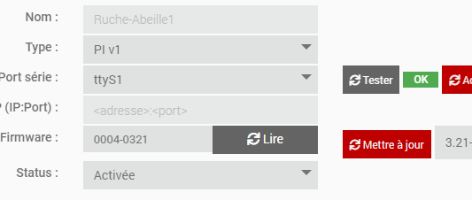
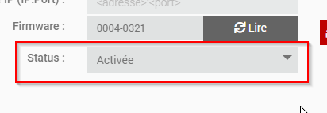
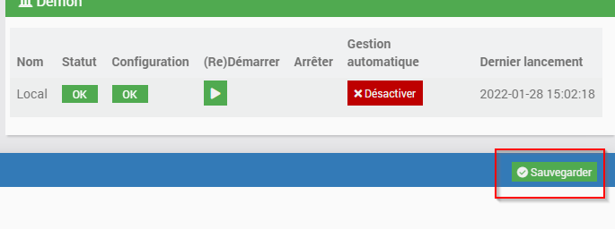
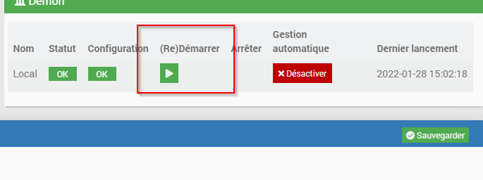
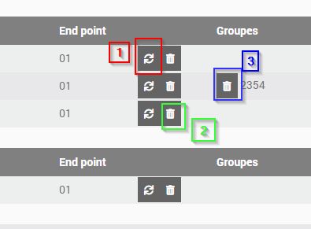

Utilisation¶
La page de configuration d’Abeille¶
Dépendances¶
2 éléments sont potentiellement requis en fonction du type de zigate que vous utilisez:
le package WiringPI est requis si une des zigates est du type « PI »
le package “socat” est requis si une des zigates du type « WIFI »

Configuration de la zigate¶
L’exemple ci apres montre la configuration d’une zigate du type « PI », connectée sur le port « ttyS1 » et activée.

Les éléments a remplir sont les suivants
Le type de zigate: « PI », « USB », « DIN » ou « WIFI » et la version correspondante
Si type USB/PI ou DIN, le port utilisé
Si type WIFI, l’adresse IP et le port de la zigate
Une fois ces éléments connus, il est possible de faire un test de communication (sauf version WIFI pour l’instant) via le bouton « Tester ». Si le test est bon, « OK » en vert apparaitra. Sinon le log « AbeilleConfig.log » doit donner + de précisions quant au problème rencontré.
Une fois le test OK, il ne vous reste qu’a activer la zigate, sauvegarder, et redémarrer Abeille
puis
et enfin
La page de gestion des équipements¶
On accède à cette page via différents moyens:
Le menu Plugins > Protocole domotique > Abeille
Depuis la page de config via le bouton “Ouvrir” de la zone “Etat”
Cette page liste tous les équipements gérés par Abeille et déja inclus dans Jeedom.
Groupes¶
Les équipements peuvent être adressés de deux façons:
Directement via leur adresse Zigbee courte qui leur est attribuée lors de l’inclusion
Ou via une adresse de « groupe » permettant de joindre un ensembles d’équipements en même temps si ILS SUPPORTENT CETTE FONCTIONALITE
Les adresses de groupe sont typiquement utilisées pas les télécommandes Zigbee: Hue, Ikea,…
L’intérêt est qu’un seul message sera envoyé sur le réseau Zigbee, répété par tous les routeurs et tous les équipements ayant cette adresse de groupe réagiront donnant une impression d’exécution simultanée.
Note
Astuce: Ça peut aussi vous sortir d’une situation ou la couverture radio n’est pas bonne et ou vous avez du mal à joindre un équipement. Si vous l’adressez avec son adresse courte, le message doit être routé jusqu’à sa destination par une route spécifique qui peut être interrompu par une muvaise liaison radio. Si vous l’adressez avec une adresse de groupe, le message va être répété par tous les routeurs et vous augmentez la chance que l’équipement reçoive l’information.
Vous pouvez aussi utiliser un scénario dans Jeedom pour adresser un groupe d’équipements, en envoyant à chacun d’eux une commande. Cette solution ne permet pas d’avoir l’impression d’instantanéité mais est très flexible si vous avez un mix de produit zwave et Zigbee par exemple.
Les équipements supportant l’adressage par groupe sont listés dans la section « Groupes »

Raffraichir ou supprimer un/tous les Groupes
Le bouton “1” permet de raffraichir tous les groupes pour l’équipement correspondant. Le bouton “2” quant à lui permet de supprimer tous les groupes. Le bouton “3” enfin permet de ne supprimer qu’un seul groupe.
Remplacement d’équipements¶
Ce chapitre peut vous interesser si vous souhaitez conserver l’historique d’un équipement qui ne répond plus ou que vous souhaitez remplacer.
L’idée est la suivante:
Vous procédez à l’inclusion du nouvel équipement du MEME TYPE que celui à remplacer
Puis via la partie “remplacement”, selectionnez le vieil équipement
Selectionnez le nouvel équipement
Et cliquez sur “Remplacer”.

Migration d’équipements¶
Si vous avez plusieurs Zigates et souhaitez basculer un équipement de l’une à l’autre, c’est le chapitre qu’il vous faut.
Globalement dans tout réseau Zigbee, la procédure est
d’exclure proprement l’équipement de son réseau initial
puis de le réintégrer dans le nouveau réseau
dans les 2 cas, lors de l’inclusion dans le nouveau réseau, Abeille devrait reconnaitre l’équipement (graçe à son adresse IEEE) et faire la mise à jour nécessaire pour qu’il n’y ai aucun doublon.
Dans la pratique, la partie suivante est une aide à cette migration bien qu’elle puisse ne pas fonctionner dans tous les cas. En particulier les équipements plus vieux que Zigbee 3.0 peuvent être “capricieux”.

Une fois l’équipement et la zigate de destination choisis, la séquence sera la suivante
La Zigate destination passe en mode “inclusion”.
Demande à l’équipement de quitter le réseau.
Si l’équipement est sur piles, vous devez le reveiller dans la foulée. C’est probablement le + compliqué. Une fois sorti du réseau, il devrait se remettre à la recherche d’un nouvau réseau avec qui s’associer.
Dans tous les cas si cette procédure ne fonctionne pas, le plus simple revient à
Mettre la Zigate destination en mode inclusion.
Puis forcer un reset sur l’équipement pour qu’il fasse une nouvelle association.
La page de détail d’un équipement¶
On y arrive simplement en cliquant sur l’équipement en question.
Mode “Avancé” pour une Zigate¶
En cliquant sur une Zigate, puis sur l’onglet “Avancé”, le menu suivant est affiché:

Choix du canal ZigBee
Par défaut le canal est choisi par la Zigate elle-même en fonction de l’occupation des fréquences (mode « auto »).
Le canal choisi est affiché et il est possible de « forcer » un canal de son choix.

Mise-à-jour « Over The Air »¶
Certains équipements supportent la mise-à-jour de leur firmware à travers le réseau (Over The Air).
Abeille permet d’effectuer cette mise-à-jour dés lors que vous avez récupéré le bon firmware auprès du fabricant.
Accès à l’assistant de mise-à-jour¶
Via la page des équipements (Plugins > Protocole domotique > Abeille)

En cliquant sur le bouton ci-dessus, l’assistant de mise-à-jour apparait comme l’exemple suivant:

Le bouton AJOUTER permet de charger un firmware sur la boxe Zigbee.
Les formats supportés sont « .ota » ou « .ota.signed ».
A partir du moment ou un firmware est disponible, vous pouvez notifier l’équipement correspondant pour lui demander de lancer la mise-à-jour. N’oubliez pas que si cet équipement est sur batteries, il faut le reveiller tout de suite apres l’applui sur le bouton « NOTIFIER.
Un peu de détail¶
Pour les curieux, le sequencement des étapes de mise-à-jour est le suivant:
Optionnel: L’équipement peut être “notifié” qu’un firmware est disponible pour lui
L’équipement demande si un FW est disponible
La zigate répond oui « il y en a un, telle version », ou « non »
L’équipement demande l’envoi du firmware par petits « blocks »
Le plugin renvoi les bouts de demandés. Cette étape peut prendre un long moment (autour d’1H pour un firmware Ikea par ex)
Une fois le transfert terminé, l’équipement vérifie l’integrité et fait sa mise à jour si tout est monde ou remonte une erreur
Inclusion¶
La première étape pour pouvoir utiliser un équipement est de l” Inclusion dans le réseau zigbee géré par la zigate. Il n’existe pas de méthode universelle car chaque fabriquant est libre de procéder de la façon qu’il souhaite. Le grand principe est de mettre la zigate en mode Inclusion et de faire des manipulations sur l’équipement pour qu’il s” Inclusion et rejoigne le réseau.
Suppression¶
Vous avez la possibilité de faire une Suppression d’un équipement du réseau zigbee géré par la zigate.
Santé¶
Le réseau est constitué de nombreux équipements qui vivent au rythme et aléa du réseau radio, des coupures de courant, etc. Afin de monitorer le réseau Abeille propose plusieurs outils: Santé
Tuto¶
Dans la mesure ou Abeille à pour objectif d’exploité le réseau, je vous propose quelques Tuto permettant de mettre en application et répondre à vos besoins.
Trucs et Astuces¶
D’autres fonctions de Jeedom sont bien pratiques, par exemple si vous devez Fonctions Jeedom remplacer des équipements par d’autres, ou Fonctions Jeedom des commandes par d’autres.